一辆银色轿车的车门上有多个深凹痕，漆面也受损。视频演示了从拆饰条、磨到裸金属、填腻子、打磨到喷漆抛光的全过程。下面按可照做的顺序拆成 5 步，关键数字都带原片时间戳。
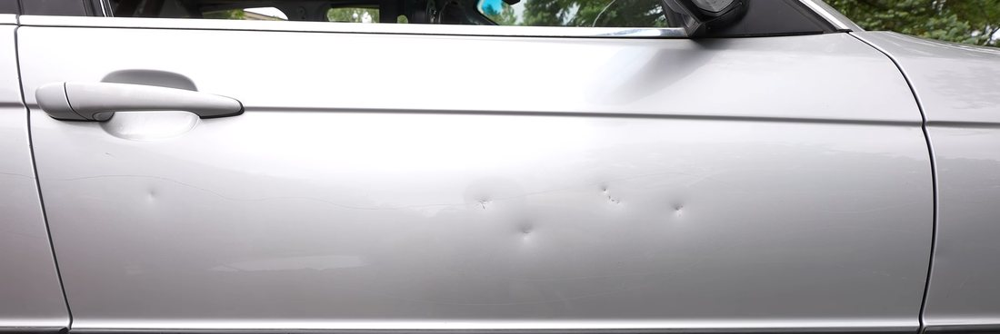
适合谁：凹痕深、边缘尖锐、金属已明显弯曲，且漆面也破损的人。视频明确说这类凹痕不适合免喷漆修复，最终还是要喷漆00:00:5600:01:08。
不适合谁：只想把浅凹痕吸出来、不想喷漆的人。视频说浅而不尖锐的凹痕可以试 PDR 套装，但拉过头还要用塑料涂层锤子敲回，需要大量练习00:00:2200:00:41。
视频里没说：整套 repairs 的总花费与总工时。只给了「4 英寸腻子圆够填两扇门的所有凹痕」00:12:24和「喷两扇门用了三罐漆」00:24:00。
材料清单：专业车身腻子、玻璃腻子、80–5000 目砂纸00:02:03、刮刀、砂纸块、除尘布、胶带和异丙醇00:02:08。喷漆部分还要底漆、色漆和汽车级 2K 清漆00:02:24。
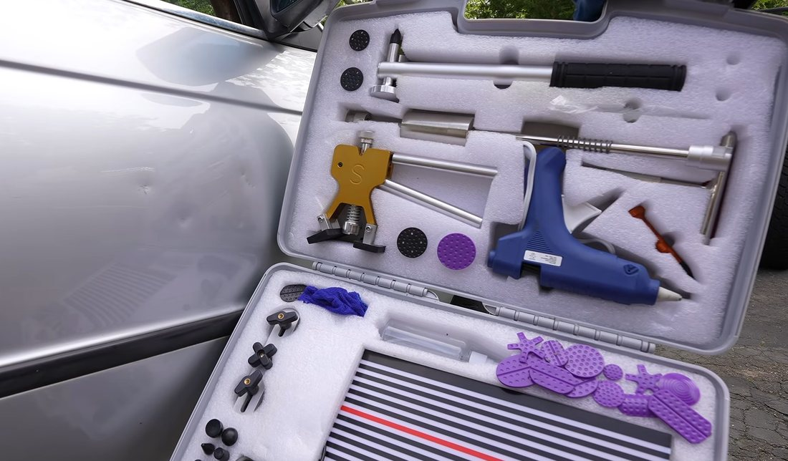
防护分两档：打磨至少戴 N95 防尘口罩和护目镜00:02:32；喷漆必须戴带有机过滤器的全面罩式呼吸器00:02:40。视频后面特别强调 2K 清漆的异氰酸酯不能吸入00:21:28。
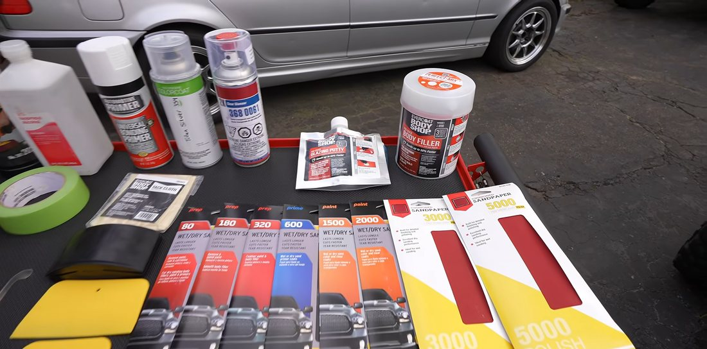
| 要决定的事 | 视频里的说法 | 照着做 |
|---|---|---|
| PDR 还是腻子 | 浅、不尖锐的凹痕可用热熔胶吸盘 + 滑锤拉出00:00:28；深、边缘锋利、金属严重弯曲的不行00:00:56 | 先看坑的深度和棱线，再决定；拉过头要用塑料涂层锤子轻轻敲回00:00:41 |
| 为什么还要喷漆 | 这些凹痕都伤了漆面，修平后损伤仍在，最终仍需重喷00:01:0300:01:08 | 把喷漆算进流程，不要只算腻子工时 |
| 自己喷还是找店 | 室外车道用喷漆罐「不要指望专业级完美」00:19:44；想要完美效果可找修理厂或喷漆店00:19:52 | 能接受「比之前好很多」就自己喷；完美交付交给店 |
| 底漆打多大范围 | 只在有填料和裸露金属处喷底漆，用来密封、防腐蚀00:22:5600:23:04 | 别整门盲喷；每罐按罐身说明操作00:22:56 |
| 清漆选普通还是 2K | 2K 含固化剂，硬度、耐化学品和抗紫外线更好00:21:12；但异氰酸酯吸入很危险00:21:28 | 用 2K 就必须配全脸呼吸器和滤芯00:21:36 |
整门要喷漆，先把塑料饰条拆掉。用饰条拆卸工具撬出，小心别刮伤车门00:03:12。卡扣可能断，视频说它们便宜、好换，断几个很正常00:03:2000:03:28。
清洁用脱脂剂或肥皂水：一茶匙肥皂兑清水，冲整个面板，把蜡、油和灰洗掉，免得打磨时压进金属00:03:5200:04:00。
圈范围别只圈看得见的小坑。视频用反射板说明：周围金属也向内弯，实际宽度远大于肉眼判断00:04:4800:05:04。凹痕外侧还要再留 1–2 英寸裸金属供腻子附着00:05:12。
用 80 目砂纸只磨凹痕区域，不要整片磨，免得增加工作量00:04:0800:04:16。砂纸包在厨房海绵上，压力更分散，不会用手指磨出热点00:05:36。
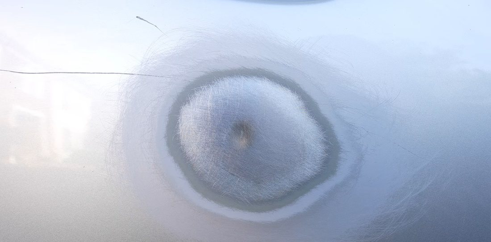
砂纸堵了就轻弹几下继续用00:06:00。磨完要用异丙醇擦掉粉尘00:07:36，再等 10–15 分钟让酒精挥发00:07:52。有电动砂光机会快很多，但视频强调手工也能做00:07:1200:07:20。
把随罐说明书用胶带贴在纸板上当配比卡：先倒满一个 4 英寸圆，再沿圆圈挤一条 4 英寸固化剂线00:08:2400:09:20。视频说 4 英寸圆够填两扇门的所有凹痕00:08:56。
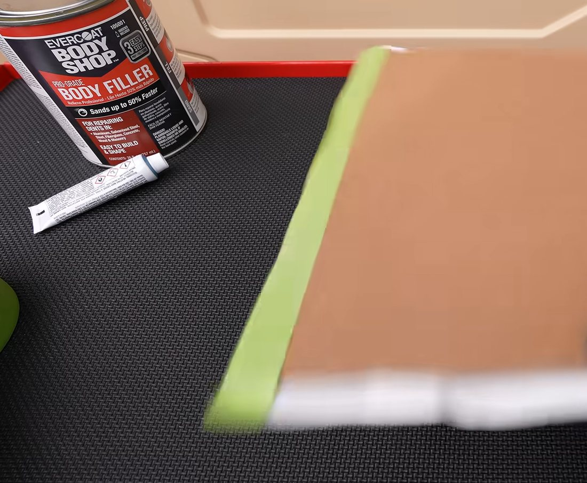
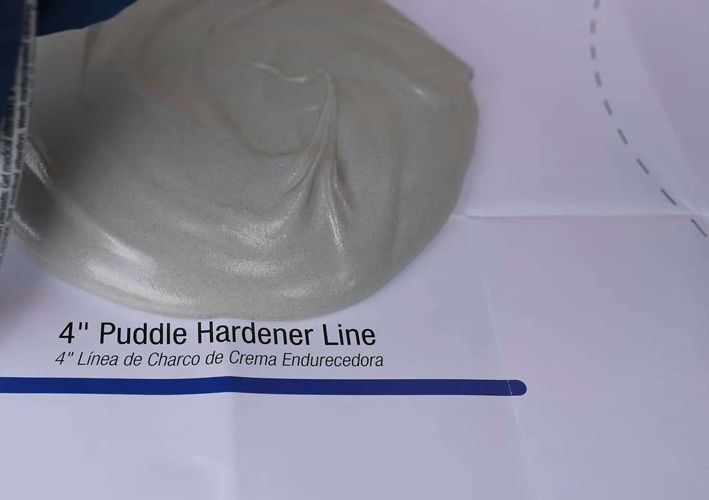
混合时用刮刀翻拌，不要搅拌——搅拌会带进气泡，涂上车就是针孔00:09:3600:09:44。翻到看不见蓝色条纹即可，全程最多 30 秒00:10:08，然后摊薄散热00:10:16。
21℃ 时只有约 5 分钟操作时间00:10:24。第一层先用刮刀用力把薄薄一层压进裸金属，让树脂润湿表面00:10:40；再逐层加厚到略高于周围面板00:10:56。腻子别流到未打磨的漆面，否则后面很难磨00:11:12。静置约 15 分钟固化00:11:28。
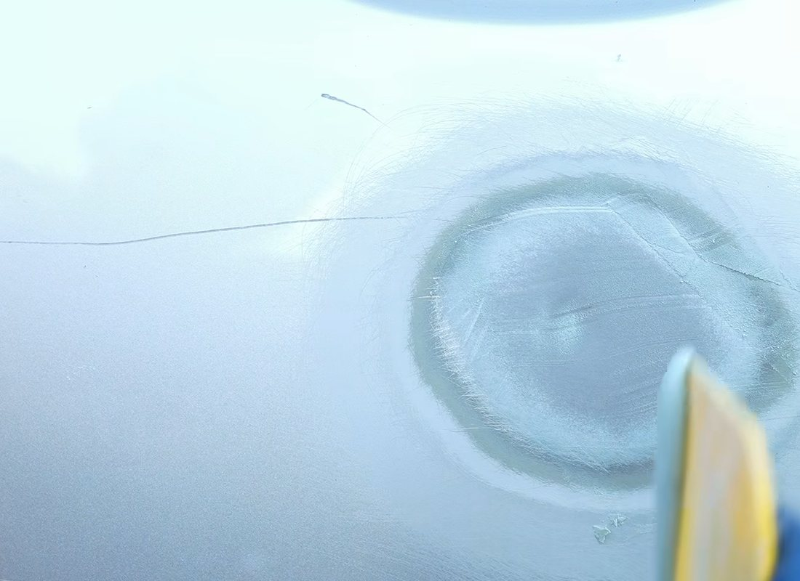
先用 80 目配砂纸块打磨，砂纸块平整坚硬，能避免手指压力留下波纹00:13:1200:13:20。采用「X」形交叉打磨，从多个方向找平00:13:36。
换 180 目后要向外羽化 6–12 英寸，把 80 目划痕全部磨掉00:13:4400:14:16。闭眼摸过去不应感到台阶，指甲也刮不到边00:06:56。
低洼和针孔用玻璃腻子补。必须用新的混合面：旧纸板上的车身腻子碎屑会破坏新材料00:15:2000:15:28。别直接在纸板上混，固化剂会渗进去导致比例失衡；视频的做法是纸板套塑料自封袋00:16:0800:16:16。
同样按 4 英寸圆 + 4 英寸线配比，翻拌约 30 秒，操作时间约 5 分钟00:16:4000:16:56。薄薄一层压进低洼，再堆到略高00:17:04；静置 15 分钟后用 320 目长距离打磨00:17:3600:17:44。
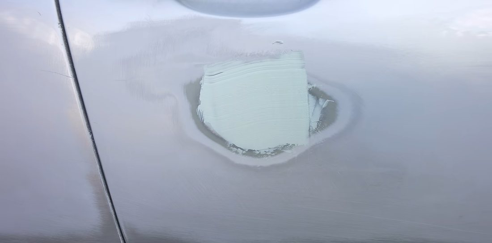
喷漆前继续用 320 目 → 400 目打磨整个门板，让漆更好附着00:18:4800:19:04。吹风机吹灰后再用酒精擦一遍00:19:1200:19:28。
先找色号。视频这辆车的色号是 354 泰坦银，宝马金属银00:20:0800:20:16。一般在驾驶员侧门框贴纸上找；这辆车在发动机舱驾驶员侧减震器塔架上00:20:2400:20:40。
遮蔽要细：所有不想喷到的地方都贴胶带，镀铬饰条要把胶带塞到饰条下面00:21:4400:22:00。视频在车道上搭了帐篷，防止油漆干燥时落灰00:22:1600:22:24。喷前用除尘布轻擦面板00:22:32。
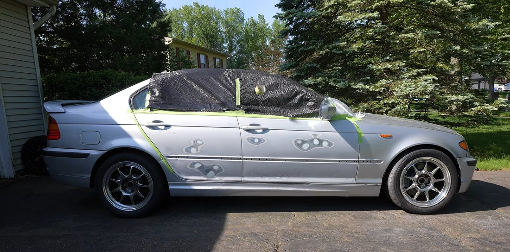
底漆只在裸金属和填料处薄喷，第一层后几分钟再喷第二层并向外晕染，第三层收口密封00:23:0400:23:1200:23:20。金属漆要时不时摇罐，让铝粉悬浮均匀00:23:44。两扇门用了 3 罐漆，视频建议每个面板备 2 罐00:24:0000:24:08。
2K 清漆要先按罐身结构释放固化剂，摇 1–2 分钟00:24:1600:24:24。同样喷三层，每层比底漆稍厚但不能流挂，最后一层最厚00:24:3200:24:56。然后干燥 一天00:25:04。
湿磨顺序固定：1000 → 1500 → 2000 → 3000 → 5000 目，每级都用肥皂水保持润滑00:26:0800:27:04。磨到整面均匀发雾、看不到划痕再抛光00:27:44。
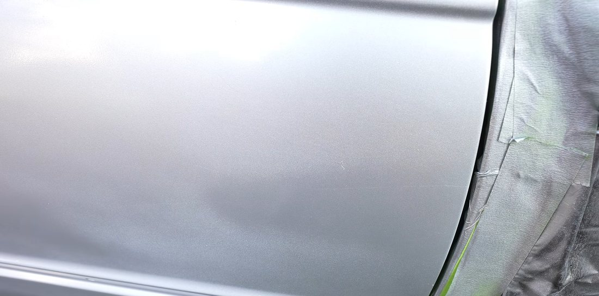
抛光三步：PC1 研磨剂去砂纸痕，PC2 抛光剂出光泽，PC3 超细抛光剂收尾00:26:32。手工要用中等偏重压力画小圈、圈与圈重叠00:28:32；视频说有双作用抛光机会省力很多00:28:00。最后敲回新饰条00:30:08。
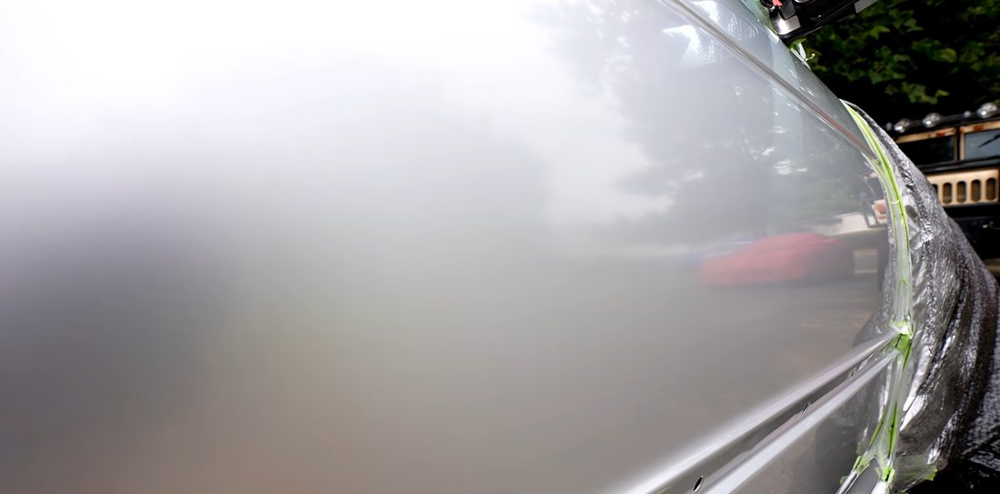
| 坑 | 怎么避 |
|---|---|
| 拿 PDR 硬拉深凹痕 | 深、尖、金属严重弯曲的不适用00:00:56；拉过头还要敲回00:00:41 |
| 不拆饰条就整门喷 | 先用撬棒拆饰条，卡扣断掉属正常00:03:1200:03:20 |
| 不清洁就打磨 | 肥皂水洗掉蜡和油00:03:52；酒精擦尘后等 10–15 分钟00:07:52 |
| 只用手指压砂纸 | 包海绵分散压力00:05:36，避免热点磨出小坑 |
| 搅拌腻子 | 翻拌到无蓝纹00:09:3600:10:00，搅拌会留针孔00:09:44 |
| 一次堆厚腻子 | 薄层润湿 + 逐层略高00:10:4000:11:20，流到漆面很难磨00:11:12 |
| 在旧纸板上混玻璃腻子 | 换新混合面或套自封袋00:15:2800:16:16 |
| 2K 清漆不戴全脸呼吸器 | 异氰酸酯吸入危险00:21:28，必须配滤芯00:21:36 |
视频说刚喷完漆「通常要等两周才能贴膜」，但为了赶比赛立刻贴了膜00:30:3200:30:40。这是作者的时间安排，不是通用建议，本文不背书。
作者称成品「看起来棒极了」00:29:52，同一段又说「完美吗？不」00:29:56，并承认户外作业落了花粉00:25:52。这类效果判断因人而异，本文不下结论。